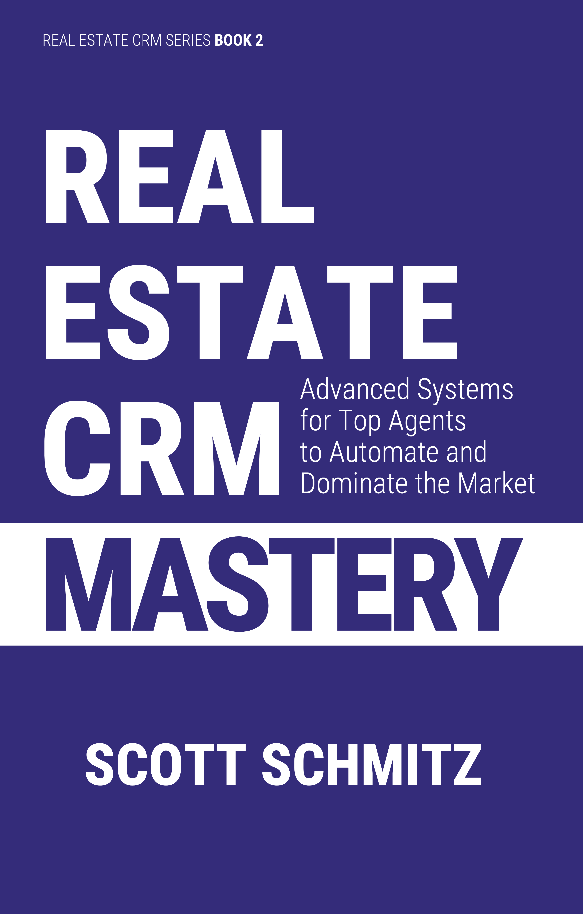

REAL ESTATE SYSTEMS FROM A 20-YEAR INDUSTRY VETERAN
Most experienced real estate agents use their Real Estate Customer Relationship Manager (CRM) as little more than a glorified address book. Calls are returned, but prospects who require time for incubation are often lost due to inconsistent follow up and inattention. Past clients are neglected, resulting in fewer referrals and repeat business. Real Estate CRM Mastery shows how to turn your CRM into a command center.
INSIDE, YOU'LL DISCOVER HOW TO:
—Wayne and Lynn Morgan, How to Get Rich in Real Estate… and Have a Life!
The primary role of a real estate agent is to act as a matchmaker, connecting buyers and sellers to close a deal. As an insider, you know how challenging that can be. Finding the right home for a buyer at a fair price is difficult enough. But there are also the complexities of inspections, loans, high-stakes life events, and the economy. And we haven’t even touched on the personalities involved!
An essential tool for this is your real estate CRM1. Your CRM helps you find new clients and maintain relationships with past clients, friends, and family. It also helps you track the many details needed to identify buyers and sellers, match them, and help them successfully close their sales.
Much like you act as a matchmaker for buyers and sellers, this chapter acts as a matchmaker for you and your CRM. We will help you identify the features to look for and the pitfalls to avoid in a CRM. We will also assist you in connecting your CRM to other services you’re already using and discuss how it can serve as the backbone of growth for your real estate career.
You can think of a real estate CRM as a Swiss Army knife, offering many features in one tool. It stores your contact list and personal details for each person, including birthdays, spouse’s name, children, pets, and more. You can organize contacts to print mailing labels for your Christmas cards. It also tracks your listings and closings, calculates commissions, and monitors your income and expenses. Additionally, it manages showings, showing feedback, offers, and contingencies.
You can communicate via email, phone, or text messages, as well as print mail-merged letters. Your CRM can even help you schedule follow-ups using the touch cycle, an automated, repeating reminder to contact a specific person after a set period, such as every 90 days.
Millennial Minute Secret: Don’t forget to take advantage of the text message chat functionality of your CRM. Many people screen their calls, or can’t answer because they are at work. Around 75% of millennials prefer texting over calling, with that figure rising to 80% among Gen Z. Around 25% of Gen Z avoid answering the phone altogether.
You can track your appointments and sync them with your smartphone. This way, you never miss another appointment.
You can also track the activities you need to complete through your task list. For the people you need to contact each day, your CRM can generate a daily contact list. Your daily call list is a list of people you need to reach out to. You might call these people, but you can also text them, drive by and say hello, or send a letter. By allowing some flexibility in how you reach out, you increase the chances of completing that task. The main advantage of using a daily contact list instead of scheduling appointments in your calendar is that once you contact someone, you can mark the task as completed, which automatically updates that person’s last contact date to today. If that person was on a 90-day touch cycle, a new task to reach out again in 90 days would be created. This level of automation makes it easy to call multiple people each day and keep track of who has been contacted and who still needs to be reached.
One of the main benefits of using a real estate CRM is access to a collection of ready-made content. This includes flyer templates, eCards, and letters. By starting with these pre-written materials and customizing them, you can quickly complete tasks that would otherwise take hours. The letter library also serves as a source of inspiration, offering templates for standard sales pitches across various marketing niches, including new-home buyers, retirement downsizing, second-home buyers, For Sale By Owner (FSBO), expired listings, and more. Most agents create their own tweaked versions of the letters, allowing them to tailor the content to their specific requirements.
There are also several capabilities in a real estate CRM that you could never do on your own. These include the ability to set up a time-release drip sequence of printed letters or emails. Your CRM schedules them and, for emails, even sends them automatically at the correct date and time. The letters are mail-merged so that personal details such as the prospect’s name, the property’s address, a mailing address, and other personalized information are inserted. Doing these activities manually would be quite challenging, as each person in a drip sequence is at a different stage in the process.
One key capability you gain by using a real estate CRM is automation. I mentioned email drip sequences, which is one form of automation. You can also automatically feed all your leads into your CRM via email feed, which converts email notifications from your websites and other lead sources into prospect records. That way, all your leads are centralized in one location, and you are automatically notified when a new lead is added. This is critical, as responding quickly to new leads maximizes the likelihood of conversion. A few examples of lead sources include Internet Data Exchange (IDX) websites, your personal website, and commercial websites such as Zillow, Trulia, Realtor.com, Redfin, and many others.
Another source of leads is lead aggregators such as RedX, ForeclosuresDaily, and USProbateLeads, which gather information on expired listings, FSBOs, vacant homes, probate properties, and pre-foreclosures. You would import that data into your real estate CRM using valet import, a service in which your CRM vendor sets up a custom importer for that specific lead source. Your CRM vendor would set up a custom menu item just for you, making it easy to import data from that source each week. The level of automation this provides can be significant for agents pursuing these kinds of leads.
The Google sync integration syncs your smartphone contacts and calendar with your CRM. You can also use the built-in open house registration form on your iPad to register attendees. The call capture feature in your CRM automatically gathers phone numbers, caller ID information, and messages from callers to your automated hotline number listed on your yard signs.
By leveraging your CRM’s integration features, you can use it as your command center to maintain a unified address book—a merged database of all contacts and leads from all the systems you use. Don’t underestimate the power of having everything in one place. It’s much easier to quickly find a contact or send a bulk email to a group when everything is stored together and carefully merged with no duplication or missing information. The last thing you want is to send the same email to the same person multiple times because of duplication in your system.
One often overlooked advantage of using a real estate CRM is its ability to streamline your operations. As you gain more experience, you’ll develop checklists of standard procedures for each listing and closing. You’ll identify systems that, when implemented, give you the best results for nurturing leads. Your real estate CRM lets you organize these checklists using task plans, prebuilt, automated checklists of steps you can apply to any lead or transaction.
When your business is small, you might manage these checklists in your head or on a scrap of paper. As your business expands, you’ll find you can’t handle more than one or two listings and closings at a time without forgetting something. This could have serious consequences, as missing something important—like returning the key to the seller after making a copy—can significantly affect the impression you leave.
Using the transaction management features in your real estate CRM lets you track all activities for your listing. No matter how many listings you manage at once, you can handle them efficiently. This is especially important in an industry where most of your business occurs during just a few busy summer months. You can track parties, documents, deadlines, contingencies, showings, showing feedback, promotions, offers, and each party involved in a transaction. With the touch cycle, you can maintain regular contact with your client, any referring agent, and the agent on the other side of the transaction.
You can use your CRM’s commission and expense-tracking features to monitor cash flow. This is especially helpful given the business’s seasonal nature. While you might have a cash cushion in the fall, it’s vital to ensure you have enough cash reserves to last through the winter. Your CRM can assist by comparing last year’s results with this year’s. Additionally, these seasonal comparisons can serve as early indicators of an economic downturn, helping you identify if sales are slower than at the same time last year.
Real estate calculators help you educate your clients and provide useful insights into each client’s unique financial circumstances and needs. The seller’s net calculator gives your sellers a clear estimate of how much cash they will walk away with after closing. Likewise, the buyer’s net calculator helps buyers understand their financial obligations at closing. You can also calculate maximum loan amounts and mortgage payments to help your buyers determine a suitable price range before meeting with a loan officer. The rent-vs-own calculator helps determine which option makes the most financial sense for your client’s specific situation.
As your business expands, use your CRM to review the leads you’re generating and how many are closing. This gives you a clear view of your sales funnel, which starts with unqualified leads and moves them toward qualification and, eventually, clients. This will help you make informed decisions about which marketing efforts are effective and which are not. You can then adjust your marketing strategies accordingly. With insights into your sales pipeline and past results, you can plan for seasonal changes common to the real estate market by creating a budget.
Over time, you might notice opportunities to delegate tasks to an assistant. Once again, your real estate CRM can help. The process you used to automate, systematize, and scale your business can now be enhanced by assigning tasks to your assistant through your CRM. You can use your CRM’s multi-user features to access information simultaneously with your assistant, even on a different computer. This way, you can review your assistant’s changes to make sure everything is going as planned. If your assistant runs into a problem, you can quickly find out what’s wrong and step in to help.
Finally, you can hold yourself accountable for prospecting and follow-up by using the goal-tracking feature in your CRM. This helps ensure you stay on track with your prospecting efforts and keep your sales pipeline full. You can also work with a coach to enhance your efforts. Once again, your CRM can be used to track progress and confirm that you are achieving the goals you set.
Your real estate CRM lets you manage two lists of people. The first is your contacts database, which includes friends, family, other agents, past clients, vendors, and anyone else you personally know. The second is your prospects database, which contains strangers. These are people you might have met at an open house, or those with an FSBO or expired listing whom you plan to contact to offer your services. Keeping two databases allows you to regularly clean your prospects database, as you will learn over time that some people will never work with you. You can archive and delete them from your database.
Your contacts are different. This group includes both your personal sphere (friends, family, and past clients) and your professional network (vendors, lenders, and agents). These are people you know and interact with daily. You should sync your contacts with your smartphone’s address book so you can call them easily. You will also use categories to organize these contacts for marketing and communication. Since your prospects database consists of strangers, it’s better not to sync it with your smartphone’s address book.
For agents without access to a Multiple Listing Service (MLS), a homes or properties database is a valuable CRM feature. This database lets you build a list of properties in your market area and collect statistical data on those properties. Another way to use the homes database is to maintain a list of properties an investor owns and also to monitor off-market inventory. This is especially useful for commercial properties, which are often not listed on a centralized MLS.
While features are essential, several other factors should be considered when choosing the right real estate CRM. I cannot overstate the importance of complimentary training and technical support provided by staff based in the U.S. or Canada. You will need assistance with onboarding, which includes getting started. You will also need help using your CRM’s features. Additionally, your CRM’s staff should help integrate it with other products, such as lead services and websites, and support importing data from existing sources.
Instructional video tutorials are popular and well-suited for learning simple tasks, such as sending a bulk email or setting up a drip sequence. However, complimentary phone support can be extremely helpful because it allows you to get an answer quickly. While I hope the software you select is bug-free, there is always a possibility you will encounter a bug or issue, and phone support is usually the best way to resolve it quickly.
Another important factor is the availability of a free trial. That way, you can compare the features of a few CRMs. Buying a real estate CRM isn’t like buying groceries. Each CRM targets a slightly different audience and will have a slightly different user interface and support options. The free trial lets you try the software before you commit. You can see how easy the product is to learn and use, evaluate the responsiveness of technical support, and check for glitches. The trial period is also the ideal time to confirm that the vendor provides the complimentary, hands-on onboarding you will need if you decide to subscribe.
Sometimes features sound better than they really are, and trying them helps you understand how practical your new CRM will be. Ultimately, the best CRM is the one you use regularly. If your CRM is hard to learn or operate, it undermines its purpose2. You should choose a CRM that is easy to learn and use. This way, you pick a vendor and software product that works for you.
Sometimes people impulsively buy a CRM, believing the purchase will motivate them to use it because they would feel guilty about paying for something they aren’t using. They think the more expensive the CRM, the more likely they are to use it, because if they don’t, they will feel even worse! Instead of trying to make yourself feel guilty, set small goals and reward yourself when you achieve them. Also, set a regular schedule in your calendar to log in to your CRM. Trying to make yourself feel bad won’t spur you to use your CRM.
Most real estate CRMs include features for working with an assistant or partner. However, not all are designed for assistants who are new or have little to no training. Because of this, I recommend choosing a CRM that is very forgiving of mistakes. Pick a real estate CRM that can track changes and identify who made them. Actions such as sending a bulk email should include safeguards to prevent accidental errors. Not every assistant is highly skilled, so you need to account for the possibility that your CRM will be used by someone who is not as competent as you are.
You also need the ability to undelete records that were accidentally changed or deleted. While your assistant is hopefully skilled and cautious, that’s not always guaranteed. The last thing you want is to hire an assistant only to find out they accidentally mess up your database without realizing it. You should also look for the ability to undo changes. For example, if your assistant accidentally deleted all the notes in a contact record, the CRM should offer the option to restore the record to a previous version of that contact, such as from a day or a week earlier.
The Assistant Accident Secret: As your team expands, the chance that a team member accidentally deletes a record increases. Make sure your CRM can undelete a record or revert it to a previous version from yesterday or last week. Mistakes do happen.
Your real estate CRM should be able to connect with a wide range of third-party integrations, including lead services, IDX websites, PPC advertising, open house registration software, SMS texting services, your smartphone, lockbox software, and mailing houses. You might already use these services and want to integrate them into your CRM, or you might want the flexibility to try different third-party services over time. Be sure to discuss available integrations with your CRM vendor and ask for help connecting your existing third-party services during your free trial.
All modern CRMs are cloud-based, so you’re protected if your computer crashes, is stolen, or gets infected with a virus. With a cloud-based system, you can switch devices seamlessly, and your data won’t be lost if your hard drive crashes.
There are several pitfalls when selecting a real estate CRM. The most important consideration is to choose a CRM specifically designed for real estate. A generic CRM won’t meet your needs. As a real estate agent, you work with families, and a generic CRM won’t handle the details of tracking family information, such as spouse’s names, birth dates, children’s names, and more. While this might seem minor, it’s important to remember that the husband and wife typically purchase a home together. If your communications exclude one of them, you’re already at a disadvantage.
A generic CRM also lacks essential features such as real estate calculators and income and expense tracking. Transaction management, another real estate-specific feature, includes monitoring listings, showings, offers, contingencies, and the parties involved. Real estate is a unique industry, and a basic CRM will lack a content library for flyers, eCards, and letters, as well as automated drip sequences.
A second pitfall to watch for is using an all-in-one CRM that bundles a website and paid lead services. I recommend avoiding purchasing your CRM, lead service, and website from the same vendor. While this might seem like a good idea at first, it forces you to use all three services together. If you’re dissatisfied with one, you have to cancel all three to make a change. Instead, leverage your real estate CRM’s integration features to add third-party services. If your lead service or website isn’t delivering the results you need, you can then fire them while keeping your CRM.
When it comes to websites, there are many types you can create, and their costs vary. If you use a website included with your CRM, your options are limited, reducing your flexibility. Trends in the industry have made it harder to justify high-end websites, as getting your website noticed has become more challenging amid stiff competition from other agents and services like Zillow, Trulia, and Realtor.com3. You may decide that money spent on a high-end website is better allocated elsewhere, which is why it’s best to buy your website from a vendor other than the one that supplies your CRM.
One last point about buying an all-in-one solution is that the price is usually much higher than that of a standalone real estate CRM, even when including the cost of additional services purchased separately. In some cases, the monthly expenses for these all-in-one solutions are comparable to a car payment.
Be cautious of sneaky contract terms. It’s best to choose a vendor that offers either a monthly plan or a prorated refund. That way, if you’re unhappy with your vendor, you can cancel without penalties, giving you more control. If the vendor requires that you sign a non-refundable one-year contract, this suggests they lack confidence in their CRM’s competitiveness. They probably think that once you start using the system, you’ll regret your decision and will immediately want to cancel. I recommend working only with vendors that allow you to cancel at any time, or at most, on a month-by-month contract.
Some vendors charge extra for onboarding—the setup process for your CRM. Onboarding should be free and not incur additional costs. Onboarding typically includes assistance with transferring your database and installing letterhead with your company logo and portrait photo. Also included is complimentary training and help setting up synchronization with your smartphone, SMS text messaging, and any other integrations you intend to use, such as feeding leads into your CRM, either live or through the valet import process.
If you’re interested in what other agents think about the CRM you’re considering, check out the online reviews on Google and the BBB. Some review sites, such as G2, Capterra, Top10, and Forbes, may hide negative reviews and pay for positive ones. Because of this, they shouldn’t be considered completely unbiased, especially since vendors can pay these sites to post positive reviews.
Review your CRM vendor’s privacy policy. While some vendors clearly state that your entered data remains private, some have policies that allow them to profit from your data through integrated services and cross-marketing.
Lone Wolf Software’s platform, which includes its transaction management solutions, features an Agent Marketplace4. This marketplace allows you, the agent, to connect clients with service providers such as mortgage brokers, home warranty companies, home insurance providers, and title companies during the transaction process. Lone Wolf earns revenue through its business relationships with these service providers who either pay to be integrated into the platform or pay referral fees for transactions facilitated by the platform. Although you help facilitate these connections, Lone Wolf does not share revenue from these platform-driven referrals with you.
Zillow Group, which acquired the Follow Up Boss (FUB) CRM, can match a contact in your FUB database to a Zillow account holder, creating a “mutual customer5.” For these mutual customers, Zillow may use the private information in your CRM—including your notes—to market services to your clients, such as Zillow Home Loans, home warranties, and title insurance. This could place you in an ethical dilemma, as you may be asked to promote or sell products that are not in your client’s best interests. Like Lone Wolf, Zillow receives financial compensation from these referrals. You, the agent, do not receive financial benefit from Zillow’s marketing of its in-house services to your client base.
Two additional products with similar conflicts are CINC and RealGeeks, both owned by Fidelity National Financial (FNF), the largest title and settlement services company in the country6. From RealGeeks’ privacy policy: “We may provide Personal Information and Usage Information to our subsidiaries, affiliated companies, and other businesses or persons for the purposes of processing such information on our behalf and promoting the products and services of our trusted business partners7.”
This approach is similar to the cross-marketing strategy that banks use. One key difference between a bank and a real estate agent is that real estate agents are independent contractors. As a result, the way this information is shared does not allow you, the agent, to benefit financially from it.
While these conflicts don’t necessarily make that CRM a poor choice, it’s helpful to understand each CRM’s policy. If your clients receive spam emails from an affiliate of your CRM vendor, it’s useful to know why. You should also be aware of whether your CRM vendor uses the notes in your CRM. Don’t automatically assume that the data you enter into your CRM is private.
Some CRM vendors treat your private data as just that—private. To find those vendors, review their privacy policies. Look for a clear, straightforward statement affirming that your data is yours and will not be shared. Two vendors with the strictest privacy policies are Realty Juggler Real Estate CRM Real Estate CRM and WiseAgent, but the vendors listed below also offer reasonably strong protections.
Realty Juggler Real Estate CRM Real Estate CRM: The most affordable real estate CRM with a comprehensive feature set, including transaction management, an extensive content library, calculators, and expense and income tracking. They offer a long free trial, phone support, an excellent privacy policy, and a prorated refund for canceling at any time.
Realvolve: An advanced real estate CRM specializing in sophisticated workflow automation. This system is designed for experienced agents and real estate teams. Its robust process automation streamlines complex client follow-up plans. The platform also includes features that promote team accountability. It is suited for experienced agents and teams who require detailed control. It offers a free trial, but no phone support, and its advanced features come with a steep learning curve.
WiseAgent: A relatively affordable real estate CRM with an extensive set of features, including lead generation, landing pages, transaction management, and a web app. It offers a free trial, an excellent privacy policy, and 24-hour phone support.
Referral Maker: Emphasizes referrals as the primary lead source, built on the Buffini “Work by Referral” system. It offers excellent activity and goal tracking. Slightly more expensive than the other recommendations, but it offers multiple pricing tiers, including some that provide complimentary coaching. The feature set focuses on the early stages of the sales funnel.
iXact Contact: A relatively affordable real estate CRM with a solid feature set. They offer agent websites and a monthly newsletter. They were acquired by Elm Street Technologies in 2021.
Some brokerages offer their agents a “free” real estate CRM. While this might seem like an excellent option, there are many drawbacks to using a free CRM. Phone support is likely missing, along with many features. Most brokers choose their free CRM not for features, ease of use, or technical support; they pick the cheapest vendor. It’s like going grocery shopping and only buying the least expensive items. Canned yams for dinner again. Yum!
You may have outgrown your current brokerage and be considering a switch to a new one. However, you’re concerned about how you’ll transfer your database and are hesitant to learn a new CRM at the new firm. There’s a better way. Why not buy your own CRM? That way, you can choose the one that best fits your needs rather than being stuck with the one your broker picked. Since each CRM vendor is competing for your business, you can always switch to another if you’re unhappy with pricing, support, or features. This keeps each CRM vendor motivated to stay competitive, thanks to the power of capitalism.
Another disadvantage of a free broker CRM is poor email deliverability. Maintaining a good sending reputation with email servers requires significant effort and investment. On a free platform, the unprofessional sending habits of one agent can harm the deliverability for all other agents using the system. Without a financial incentive to monitor the network, the platform’s overall reputation can decline, causing your legitimate emails to land in the junk folder.
That’s why some free CRM vendors won’t even show email open rates. The email open rate is an important marketing metric that measures the percentage of recipients who open an email among those who received it. This is sometimes called email engagement. Just sending an email isn’t enough; you also need to make sure it’s delivered and read. Typical open rates are around 30%8. If your open rate is low, talk with your CRM vendor about ways to improve it. Reputable CRM vendors will have a postmaster, who is a person responsible for ensuring compliance with federal regulations and maintaining a good reputation with email service providers.
Some vendors that offer a free real estate CRM provide a basic product at no cost and offset lost revenue by charging extra for add-on services. I recommend asking your CRM vendor which features incur additional costs and whether the free version has any limitations.
One feature a free CRM is likely to lack is onboarding. Onboarding involves setting up your CRM, including importing data from various sources, merging duplicates, and creating a unified address book. After importing, your contacts and calendar sync with your smartphone, so you can access them on the go. Onboarding also includes installing your letterhead, which features a professional portrait photo of you and a company logo, typically placed at the top of all your emails and printed letters.
Onboarding also includes training on your CRM’s features. Most free CRMs lack training options. Understanding how to use your CRM is crucial, and that’s another reason free CRMs are often not the best choice. Look for a CRM vendor that offers complimentary one-on-one training—a scheduled session tailored to your specific needs. You can learn about a new feature, get help configuring an integration (such as an email feed), or ask questions about functionality. Because you are in the driver’s seat, you won’t have to endure a lengthy sales presentation. Instead, at the end of the training, you will have achieved something practical. Common training sessions would include organizing your database for a Christmas card mailing, sending a bulk email, or customizing a drip mail sequence to meet your unique requirements.
The Database Ditch Secret: Never let your database be held hostage. Some CRMs intentionally limit their export features to trap you with their product. Perform a full data export at least once a year. This ensures you can walk away from any vendor or brokerage with your business fully intact.
Another factor to consider is your ability to stand out with a free CRM. If you’re using the same tools as everyone else, can you offer your clients something better than other agents provide? Using your own real estate CRM helps you stand out, like someone wearing a red dress in a sea of black. A clear example of this differentiation is your ability to deliver a seller service report, which summarizes the promotional activities, showings, and showing feedback for your listing, keeping your client fully informed. In a slow market, tools like these can help prepare your client for the possibility that a price adjustment or a listing extension might be necessary.
When you choose a paid CRM vendor, that vendor is responsible to you. They will answer your calls, fix bugs, and provide reliable technical support because they know you are paying them. They understand that if you become dissatisfied, you will leave and take your business elsewhere. With a free CRM, there is less motivation to fix bugs, make improvements, or offer good technical support. Your CRM is a key tool for organizing and centralizing your activities. Don’t settle for a subpar product.
A reputable CRM vendor will provide a free trial. A free trial demonstrates the vendor’s confidence that their product can withstand close scrutiny. Since you’re not obligated to continue, this is the opposite of a broker-supplied CRM, where you have no choice. In the first case, the free market system is at work, and you are free to choose the best CRM for your needs. In the second case, your broker picks the CRM for you, and you have no say in the decision.
According to the National Association of Realtors (NAR), the average agent stays with their current brokerage for about five years9. Changing brokerages requires careful due diligence. Be honest with yourself about how the change will affect your income and the disruption to the leads you’re nurturing before you make a move. You will also need to coordinate with your old broker to determine which leads you can take with you and which are owned by your broker. Using a CRM you control serves as an insurance policy for your database if you decide to switch brokerages.
If you rely on a broker-provided CRM, your transition will require more planning. You should transfer your personal contacts to a new CRM you control before losing access to the old system. A real estate CRM will help you categorize and separate broker-owned leads.
While changing brokerages might require you to switch CRMs, dissatisfaction with your current CRM and a desire for something better are also reasons to switch.
Before you begin, it is crucial to clean your existing database. Remove outdated, inactive leads and, most importantly, ensure that anyone who has opted out of your emails is permanently removed. Migrating data without a record of who opted out can seriously harm your email deliverability, as people will complain if you start sending them emails again after they have already opted out once.
Once your data is clean, resist the urge to make your new CRM behave exactly like your old one. Each system has its own strengths, and this is an excellent opportunity to improve your processes. Review the letter library and task plans included with your new CRM. They may be better than your old templates, so you may not need to migrate your old checklists and mail templates. If you still need to transfer old letters, you’ll have to do so manually by copying and pasting, since the mail merge variables and formatting will differ.
Your new CRM vendor can assist with your transition through onboarding, data migration, and configuration of your new CRM. This is typically a free service offered by the vendor, and I highly recommend taking advantage of it. While it may seem simple to transfer your contacts to the new database, the last thing you want is to leave out a key piece of information — like a spouse’s name or birthdate — and only realize the problem when it’s too late. It’s best to let the experts at your CRM vendor handle the process so it’s completed flawlessly.
You will likely need to transfer your contacts and prospects from multiple sources, including your computer’s address book, smartphone, email programs such as Outlook and Apple Mail, the local MLS, and data from any previous CRM or contact management system. The challenge is accurately loading and merging all this information. Because each program uses different data fields, careful mapping is necessary to avoid data loss. Duplicate records should be merged so each contact has complete information from all sources. For example, your email program might contain names and email addresses, while your smartphone might hold names, phone numbers, and some email addresses.
Ultimately, you want a unified address book that consolidates all these sources. This process is more complex and time-consuming than it appears and is typically part of the onboarding process. Free CRM providers are unlikely to offer this labor-intensive service for free, but a reputable, full-featured real estate CRM vendor will.
You can also sync your contacts and calendar with your smartphone via Google. This serves two purposes: it lets you access this information on your mobile device and creates a backup. Cloud services can sometimes experience outages. Fortunately, outages are rare and usually short. However, this offers little comfort if you need to work during an outage. By syncing your contacts and calendar, you ensure you can access your information even during outages.
During onboarding, you should provide your new vendor with a professional portrait photo and your company logo so they can set up your letterhead for a consistent, professional look.
Part of the onboarding process is training. It would be difficult to use a CRM effectively without training, given the many features and options. Onboarding helps you identify the key features that will benefit you quickly, so you don’t waste time on obscure features that won’t help you become more productive and generate revenue right away.
Beyond the migration process, a professional-grade CRM must include essential safety features. The first is the ability to undelete accidentally deleted records and restore a modified record to a previous version. The second is a detailed activity log that shows who made what changes and when. This log is invaluable for accountability, training, and diagnosing errors. Together, these features create a vital safety net and ensure the integrity of your most valuable asset.
When you export your data from your old CRM, it will be in a Comma-Separated Values (CSV) file, a spreadsheet format that can be opened in Microsoft Excel or Google Sheets. When you open this file, the first row contains column titles that match each field in your old CRM. Because each CRM vendor’s export format varies slightly, converting data between CRMs is not always straightforward. For example, one vendor might label the column for a phone number “Mobile Phone,” another might use “Cell Phone,” and yet another simply “Phone.” That’s why it’s recommended to take advantage of the onboarding process your new CRM vendor provides. They can help ensure that each column maps correctly to the appropriate fields in the new system. The goal of any transfer is to move as much—if not all—of the data from your old system to your new one.
Reputable CRM vendors export data in a standard format, usually a variation of the format used by Microsoft Outlook’s CSV export. This makes the transfer process much easier. Non-competitive CRM vendors may export using column names that are difficult or impossible to load into another CRM. This complicates switching CRMs, as moving to another could cause you to lose critical information, such as your notes. When selecting a CRM vendor, a key question to ask is whether the export format is standardized so that data can be easily imported into a competing CRM.
If you decide to switch brokerages, your new real estate CRM can help you notify people in your database of your move. You should personally reach out to past clients and anyone who has recently referred you. For everyone else, send a multichannel announcement via postcards, email, and SMS. If you were using a brokerage-provided email address, plan this transition carefully. It’s crucial to update your contact information across all platforms. This announcement not only informs people of your move but also helps clean up your database.
According to Realty Times (citing a National Association of Realtors (NAR) report), 59% of real estate agents use some form of CRM, while 87% of top-performing (top 10% earnings) agents use a CRM.↩︎
Technology research firms like Gartner have consistently reported that low user adoption of advanced features is a primary reason why CRM initiatives fail to deliver their full potential ROI.↩︎
According to Maile Ohye, then-Developer Programs Tech Lead at Google, the industry-standard window for results is longer than most executives realize. In official Google documentation released in 2017, Ohye famously stated that most SEO initiatives require four months to a year before a business sees a measurable benefit.↩︎
Lone Wolf Software Privacy Policy.↩︎
Follow Up Boss CRM, owned by Zillow privacy policies.↩︎
CINC Privacy Policy.↩︎
RealGeeks Privacy Policy.↩︎
Mailchimp reports open rates of 31% for business and finance emails.↩︎
According to the 2024 Member Profile from the National Association of Realtors (NAR), the median tenure of agents with their current firm is 5 years. Among agents with 16 years or more of experience (often including broker-owners), the median tenure is 13 years.↩︎
← Previous Chapter: Introduction | Next Chapter: Harnessing the Power of Your CRM →